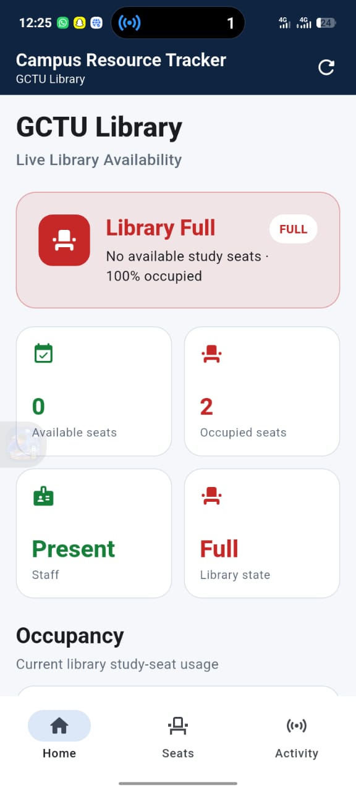
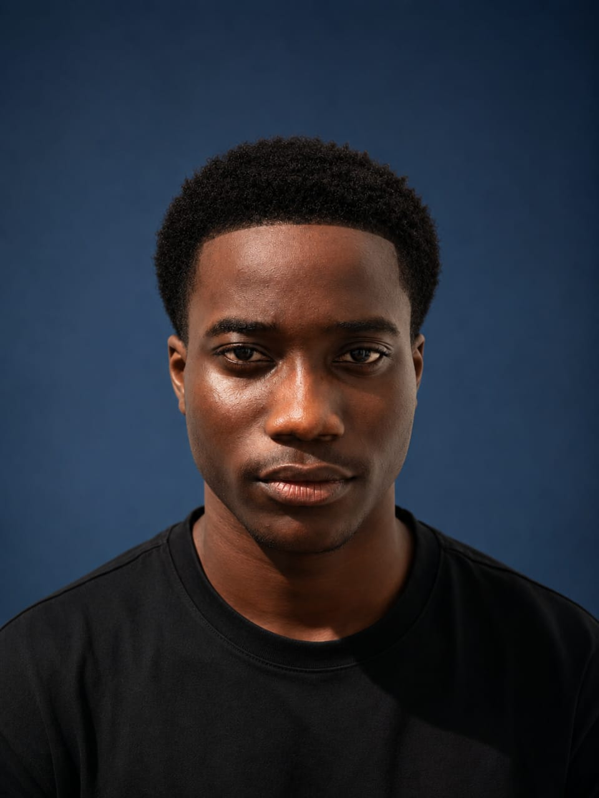
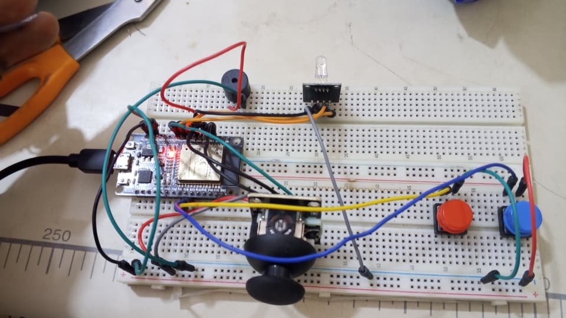

Live library availability
A mobile dashboard for checking GCTU Library seat availability, occupancy, staff presence, and the current library state in one place.
Hassan Abdul Aziz / Software Developer & Computer Engineer
I’m Hassan, a software developer and computer engineer focused on building practical technology by bringing software and hardware together.

Portfolio
2026
01 / Selected work
Real work that brings together a useful software experience and the hardware behind it.

A mobile dashboard for checking GCTU Library seat availability, occupancy, staff presence, and the current library state in one place.

A breadboard prototype that connects the physical library environment to the tracker, forming the hardware side of the system.
02 / About
I’m a software developer and computer engineer who enjoys building at the intersection of software and hardware. I’m interested in creating reliable systems, from the code that powers an experience to the technology underneath it.
Through hands-on projects and continuous learning, I’m growing the skills needed to connect hardware with useful, well-built software.
03 / Toolkit
04 / Contact
Get in touch
I’d be glad to hear what you’re working on.